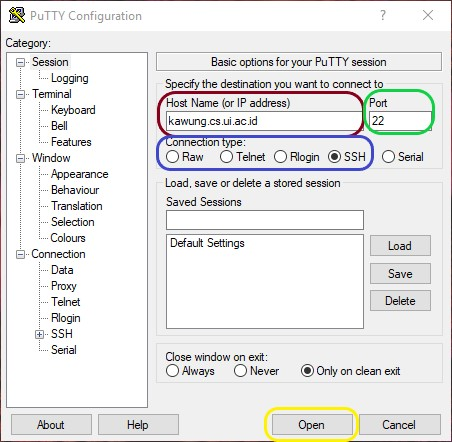
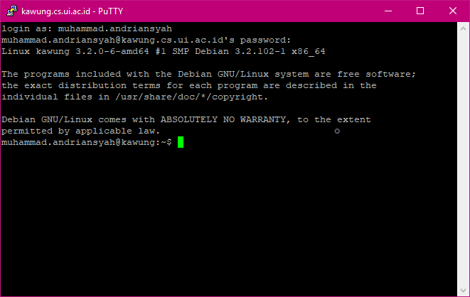

For those of you who have Linux or MacOS running as the operating system on your computer, both Linux and MacOS also have OpenSSH installed within the system. In this case, you can proceed to use the built-in Terminal, or use your preferred terminal emulator.
Tunneling, via kawung.cs.ui.ac.id
Since Badak (badak.cs.ui.ac.id) can only be accessed from internal of Universitas Indonesia, we need to do tunneling (i.e. accessing private network from public network by port forwarding). We can do this by accessing Kawung first (kawung.cs.ui.ac.id).
PuTTY
In order to access Kawung and Badak, we can use PuTTY that we have prepared from the Prerequisites part.
For step-by-step walkthrough, you can follow the images below.
Open the PuTTY program that you have installed in your computer. It will open up a PuTTY Configuration as shown in the picture below.
In the Host Name (or IP address) field, input the Kawung host name (kawung.cs.ui.ac.id), as shown in the red box in the image above. In the Port field, leave it as like the default configuration, which is '22' as shown in the green box in the image above. For the Connection type: radio button choice, choose 'SSH' as shown in the blue box in the image above. After that, click the Open button as shown in the yellow box in the image above.
After that, there will appear another window asking for your credentials (username and password). Enter your username of Universitas Indonesia's SSO account and its password, as shown in the image below.
If your login is successful, your PuTTY window may looks similar to the one in the image above.
After the Step 2 above, you have entered the Kawung server. Next, we will go to Badak server.
Enter ssh <username-SSO-account>@badak.cs.ui.ac.id then enter your SSO account's password, just like the one in the image above.
After successfully done this step, congratulations! You have successfully entered the Badak server.
Terminal
Open your Terminal.
After you opened the Terminal, you can go to Kawung by entering ssh <username-SSO-account>@kawung.cs.ui.ac.id then enter your SSO account's password, as shown in the image below.
After you successfully entered Kawung, enter ssh <username-SSO-account>@badak.cs.ui.ac.id then enter your SSO account's password, just like the one in the image below.
After successfully done this step, congratulations! You have successfully entered the Badak server.
Accessing Badak while connected to Universitas Indonesia's WiFi
PuTTY
Using the Step 1 in PuTTY part in the Tunneling part above, instead of Kawung host name in the Host name field enter Badak host name (badak.cs.ui.ac.id). After that enter your credentials (username and password) and voila! You have successfully entered Badak server.
Terminal
If you are using Terminal, you can do like the way of the Terminal part in the Tunneling part above but you can proceed to do the Step 3.
[TODO]
[TODO]
Memo is a weekly note handwritten on a piece of paper containing your knowledge of the course material for the corresponding week. It can be a summary, a word-for-word copy from the whole course material's slide (or books), a set of questions and the answers from the past exams, or it can just be blank. It is all yours*.
Since it is going to be made weekly, there will be 11 memos (6 before mid-term, 5 before finals). In those exams you can bring your memos and use it as cheat sheets.
*Your memo will be yours to use. Make it wholeheartedly, with love.
Memo will prepare you with pre-knowledges you will need before going to the class, thus making you at least know what will be learned this week and if there is a pop-up question coming from the lecturer, you can answer it correctly and win some weekly scores to be added to your SIAK.
Memo helps you to prepare for exams. It is designed to make the students learn gradually each week, therefore preventing the bad study habit of trying to cram for tests the night before.
Memo will be used as your cheat sheets. A good memo can bring you good fortune for the exam score, and vice versa.
Do not procrastinate to make the memo until the exam is approaching. It will defeats the purpose of the memo itself, and most probably will not produce the optimal memo you need for the exam either.
Try adding in several sets of questions and answers from the past exams. The exams usually have a pattern and you can learn how to solve it and then put it in your memo, so if the same pattern of question appears in your exam, you already know how to produce the answer.
And the last but not least, never think that your memo is complete, because it will never be. It is better to think that your memo will always have something missed and not included in it. With that mindset not only you will try harder to make a better memo but you will also pour your desire and heart when making it, hence resulting a memo with higher chance to be 'useful' in the exam.